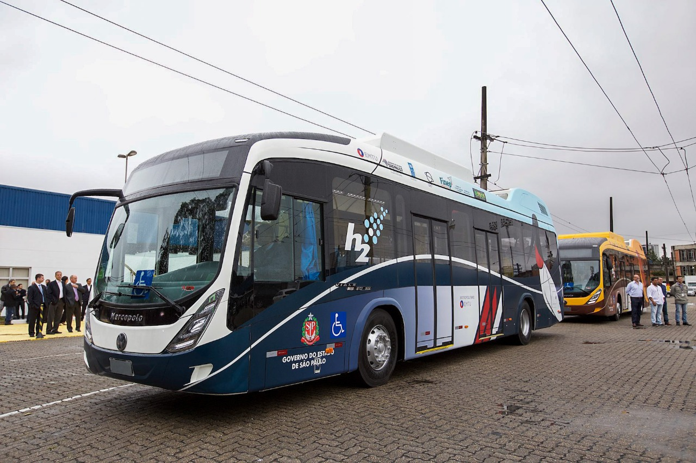

A energia limpa e de zero carbono é o alicerce do nosso futuro sustentável
Chegou a hora de diminuir o uso de combustíveis fósseis e abraçar o futuro com o hidrogênio verde como uma alternativa brilhante. O hidrogênio verde é produzido de forma limpa, sem a queima de combustíveis fósseis, e é obtido por meio da eletrólise da água, alimentada por fontes renováveis, como energia solar e eólica .Clique em Sobre para Conhecer um pouco sobre hidrogênio verde.